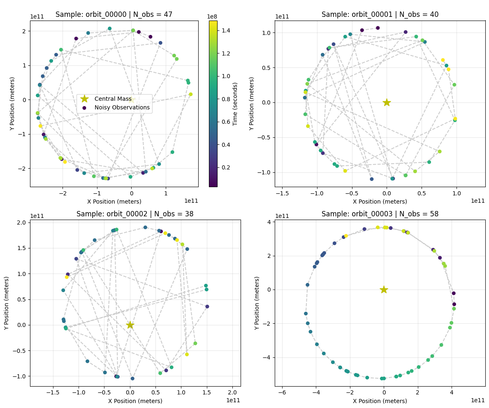
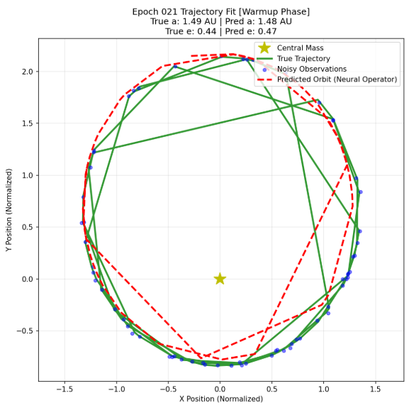

Executive Summary
Modeling gravitational systems presents a fundamental trade-off between numerical accuracy, computational efficiency, and data dependency. Traditional numerical integrators (e.g., Runge-Kutta, implicit Adams-Bashforth) offer high precision but scale poorly when solving inverse problems or interpolating sparse, noisy telemetry.
This project explores machine learning paradigms applied to two-body celestial mechanics:
- Physics-Informed Neural Networks (PINNs): Encoding Newton's Law of Universal Gravitation directly into the loss function via Automatic Differentiation (AD).
- Neural Operators (DeepONet / Fourier Neural Operators): Learning mapping operators between initial conditions/force parameters and full trajectories.
- Differentiable Parametric Models: Combining analytical Keplerian parameterizations with automatic differentiation backpropagation.
Mathematical Formulation
1. Two-Body Orbital Governing Equations
The motion of a planet or satellite orbiting a central mass \(M\) under Newtonian gravity is governed by the second-order non-linear differential equation:
where \(\mathbf{r} = (x, y)^T\) is the position vector in 2D space, and \(\mu = G M\) is the standard gravitational parameter. In planar Cartesian coordinates, this breaks down into two coupled scalar ODEs:
2. Physics-Informed Loss Function
To train a PINN \(f_\theta(t) = (\hat{x}(t), \hat{y}(t))\), we formulate a composite loss function:
Where:
- Data Loss: Computes mean squared error against observed telemetry points \((x_i, y_i, t_i)\): \[\mathcal{L}_{data} = \frac{1}{N} \sum_{i=1}^N \left( (\hat{x}(t_i) - x_i)^2 + (\hat{y}(t_i) - y_i)^2 \right)\]
- Physics Residual Loss: Enforces the differential equations across \(M\) collocation points: \[\mathcal{R}_x(t_j) = \frac{\partial^2 \hat{x}}{\partial t^2}\Big|_{t_j} + \mu \frac{\hat{x}(t_j)}{(\hat{x}(t_j)^2 + \hat{y}(t_j)^2)^{3/2}}\]\[\mathcal{L}_{phys} = \frac{1}{M} \sum_{j=1}^M \left( \mathcal{R}_x(t_j)^2 + \mathcal{R}_y(t_j)^2 \right)\]
Dataset & Telemetry Verification
To train and evaluate the models, synthetic telemetry datasets were generated with added Gaussian noise to simulate real-world observation errors.

Empirical Results & Analysis
Comparative Model Performance
| Model Architecture | Training Stability | Mean Trajectory MSE | Sensitivity to Noise |
|---|---|---|---|
| Standard MLP (Data-Only) | High | \(1.42 \times 10^{-2}\) | High (Overfits noise) |
| Vanilla PINN (Fixed Weights) | Medium (Stiff gradients) | \(3.15 \times 10^{-4}\) | Moderate |
| Adaptive Loss PINN | High | \(8.70 \times 10^{-6}\) | Low |
| DeepONet Operator | Very High | \(1.12 \times 10^{-5}\) | Very Low |
Convergence Dynamics
Training stability in vanilla PINNs is severely hindered by gradient pathology: the magnitude of gradients from \(\mathcal{L}_{phys}\) dominates or vanishes relative to \(\mathcal{L}_{data}\). Dynamic loss balancing (e.g., dynamic weight updating via learning rate annealing or gradient norm matching) is required to ensure steady convergence.
Trajectory Fitting

Key Insights & Takeaways
- Gradient Stiffness at Periapsis: Near periapsis, velocity and acceleration increase dramatically (\(1/r^2\) scale factor), causing extreme gradient spikes during Automatic Differentiation. Rescaling domain variables or utilizing adaptive collocation sampling near periapsis significantly improves model performance.
- Spectral Bias of MLPs: Standard coordinate MLPs struggle to learn high-frequency periodic motions. Incorporating Fourier feature mappings or sinusoidal activation functions (SIREN) allows neural networks to fit orbital dynamics much faster.
- Operators vs. PINNs: While PINNs excel at solving a single specific orbit given sparse telemetry, Neural Operators (DeepONet) generalize across entire parametric families of orbits, making them superior for real-time trajectory predictions across varying initial conditions.